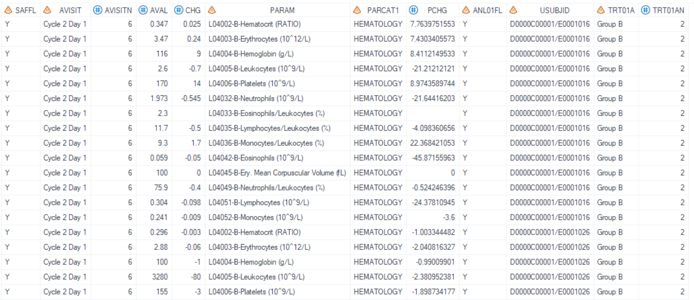
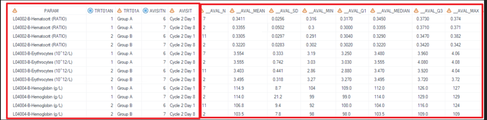
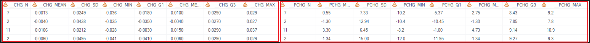
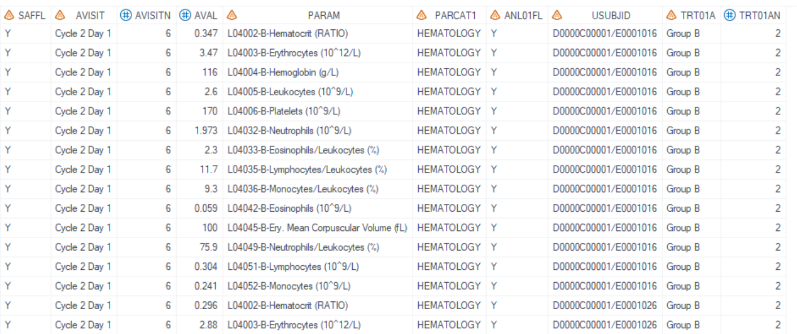
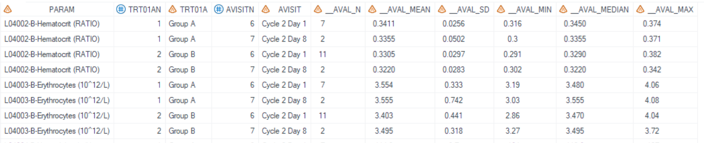

Example
Example 1 Create description statistics for one or more numeric variables
Example 2 Remove description statistics
Example 1 Create description statistics for one or more numeric variables
Details
This example does the following:
- Summarized hematology tests results, change from baseline results and percentage change from baseline results for analysis visit "Cycle 2 Day 1" and "Cycle 2 Day 8". Output statistics include "n", "Mean", "SD", "Min", "Q1", "Median", "Q3", and "Max".
- Set the decimal place as required.
Program
%** Call display macros **;
%m_u_cont(
inds=adam.adlb
,whr=%str(SAFFL='Y' and ANL01FL='Y' and not missing(AVAL) and PARCAT1 = "HEMATOLOGY" and AVISIT in ('Cycle 2 Day 1','Cycle 2 Day 8' ) )
,outds=final_m_u_nested_cont
,varlist=AVAL#CHG#PCHG
,rowVars=PARAM TRT01A AVISIT
,decimBy=PARAM
,decim=indata#indata#1
,statsmiss=NC
,sortBy=PARAM#TRT01AN#TRT01A#AVISITN#AVISIT
,exclude_stats=
,deBug=N
);
Program Description
Input data feature
The input dataset adam.adlb contains all variables needed, including SAFFL, ANL01FL, AVAL, PARCAT1. PARAM, TRT01AN, TRT01A, AVISITN, AVISIT, AVAL, CHG, and PCHG variables.

Parameter description
varlist=AVAL#CHG#PCHGspecifies the variables to be analyzed.
decim=indata#indata#1anddecimBy=PARAMindicate that decimal places for AVAL and CHG depends on PARAM (different PARAM may have different decimal places), and 1 for PCHG variable.rowVars=PARAM TRT01A AVISITspecifies the variables to be the class variables in proc means process.
The output dataset,
dsout= final_m_u_nested_cont, is sorted by PARAM, TRT01AN, TRT01A, AVISITN, and AVISIT whensortBy=PARAM#TRT01AN#TRT01A#AVISITN#AVISIToption is specified. All statistical measures ("n", "Mean", "SD", "Min", "Q1", "Median", "Q3", and "Max") are included in the output, as no statistics are excluded as exclusion is not specified forexclude_stats.
Output
Output Dataset
Output dataset is "work.final_m_u_nested_cont.sas7bdat".
This dataset includes rowVars (PARAM, TRT01A, and AVISIT). The statistical results are named after a combination of varlist and statistics (e.g., __AVAL_n, __AVAL_Mean, __AVAL_SD, __AVAL_Min, __AVAL_Q1, __AVAL_Median, __AVAL_Q3, __AVAL_Max).

For records with PARAM="L04002-B-Hematocrit (RATIO)", the decimal places are as follows: for CHG, it is set to indata (with __CHG_Min and __CHG_Max showing three decimal places), and for PCHG, it is set to 1 (with __PCHG_Min and __PCHG_Max displaying one decimal place).

Example 2 Remove description statistics
Details
In this example, "Q1" and "Q3" are not required, then use parameter exclude_stats= to remove them.
Program
%** Call display macros **;
%m_u_cont(
inds=adam.adlb
,whr=%str(SAFFL='Y' and ANL01FL='Y' and not missing(AVAL) and PARCAT1 = "HEMATOLOGY" and AVISIT in ('Cycle 2 Day 1','Cycle 2 Day 8' ) )
,outds=final_m_u_nested_cont
,varlist=AVAL
,rowVars=PARAM TRT01A AVISIT
,decimBy=PARAM
,decim=indata
,statsmiss=NC
,sortBy=PARAM#TRT01AN#TRT01A#AVISITN#AVISIT
,exclude_stats= Q1 Q3
,deBug=N
);
Program Description
Similar to Example 1, to exclude "Q1" and "Q3" from the output dataset, apply exclude_stats=Q1 Q3, with parameter values separated by spaces. The input dataset remains the same as in Example 1.

Output
Output Dataset
The generated output dataset "work.final_m_u_nested_cont.sas7bdat" contains statistical results in sequential columns for "n", "Mean", "SD", "Min", "Median", and "Max", with "Q1" and "Q3" excluded.
